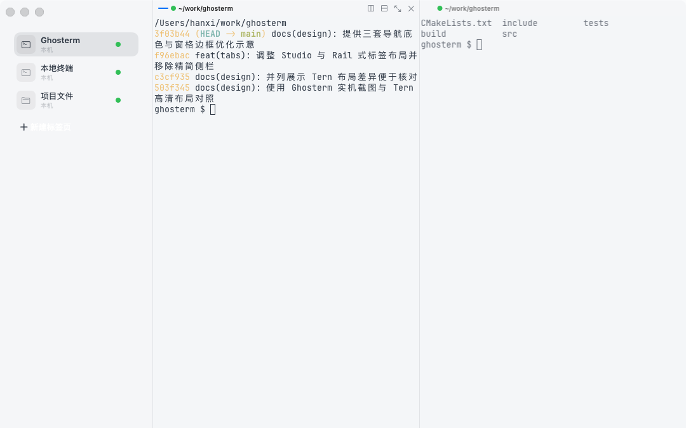
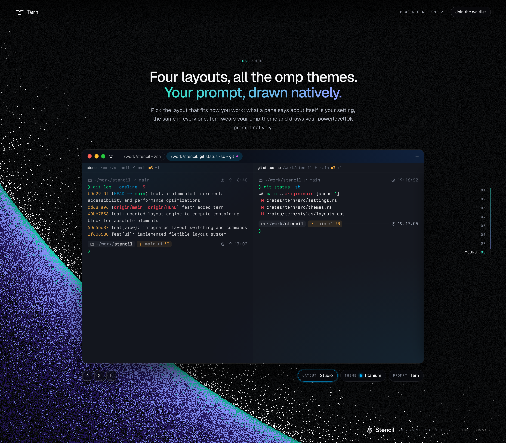
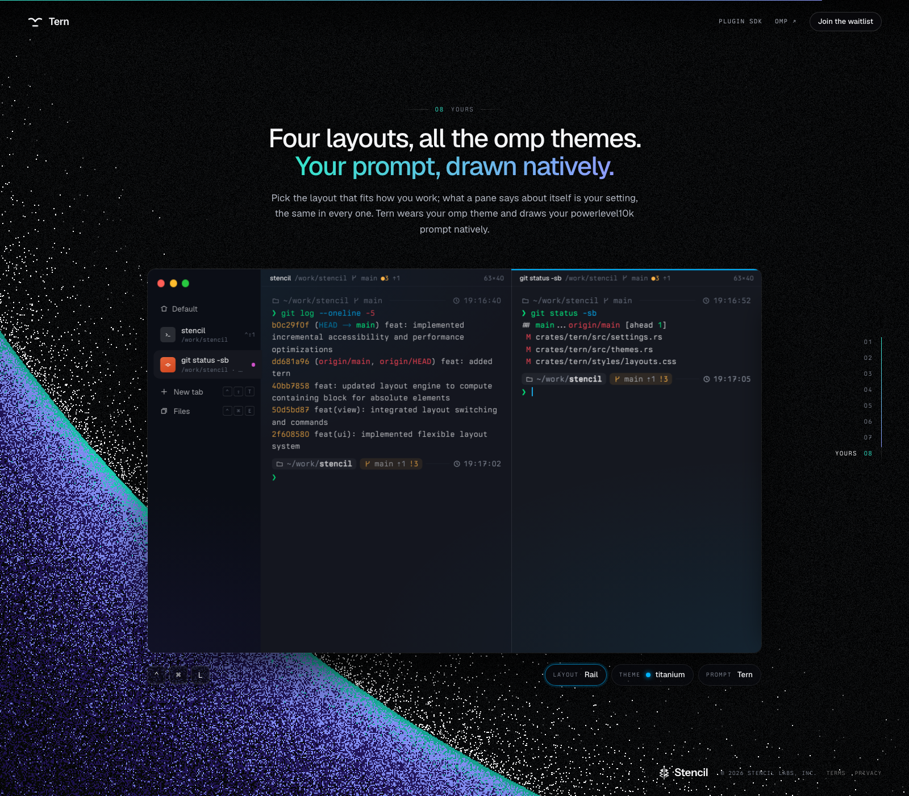
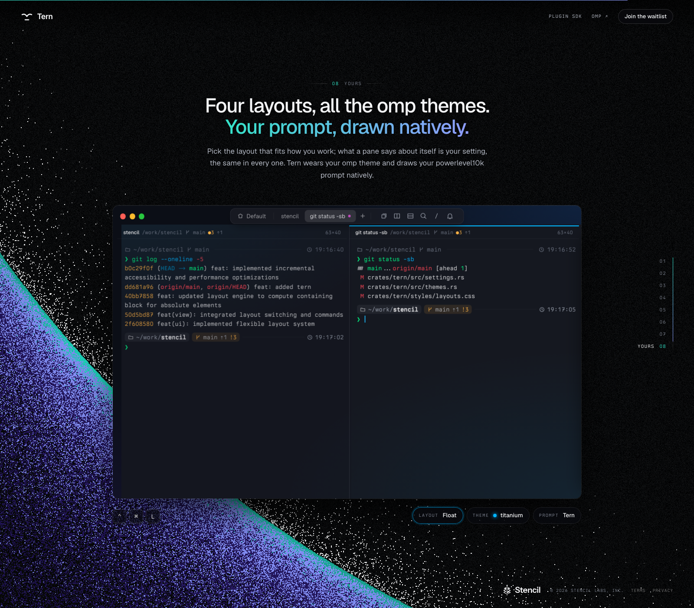

NATIVE / GHOSTERM
看真实界面，再比较布局。
本轮统一配色：侧栏、顶栏与窗格标题跟随终端背景，去掉整圈描边，只用短线标示当前窗格。
截图来自 macOS 26.6.2 原生窗口与真实终端渲染；桌面锁屏时离屏抓取，可切换深浅色及现有间距设置审核，不新增风格开关。

侧边标签 · 浅色 · 新建入口位于标签末尾
打开原图 ↗ · 截图记录 ↗REFERENCE / TERN
Tern，放在一起对照。
官网演示 · 2× 高清截图。四种布局均使用 titanium 主题；默认显示窗口区域，可展开完整截图或点图查看原图。
Tiles顶部标签与工具按钮；窗格有圆角和间距

Studio顶部胶囊标签；窗格贴合排列
Rail标签移到左侧；没有横向标签栏
Float标签与工具按钮放在顶部中央悬浮条上面同时展示四种布局的顶部区域，点击可打开原图。它们使用相同终端内容；差异在标签位置、工具栏和窗格边界。下方可切换查看完整窗口。
Tiles · 平铺：顶部保留标签和工具按钮，窗格有圆角边框与间距。
打开原图 ↗ · Tern 官方介绍 ↗